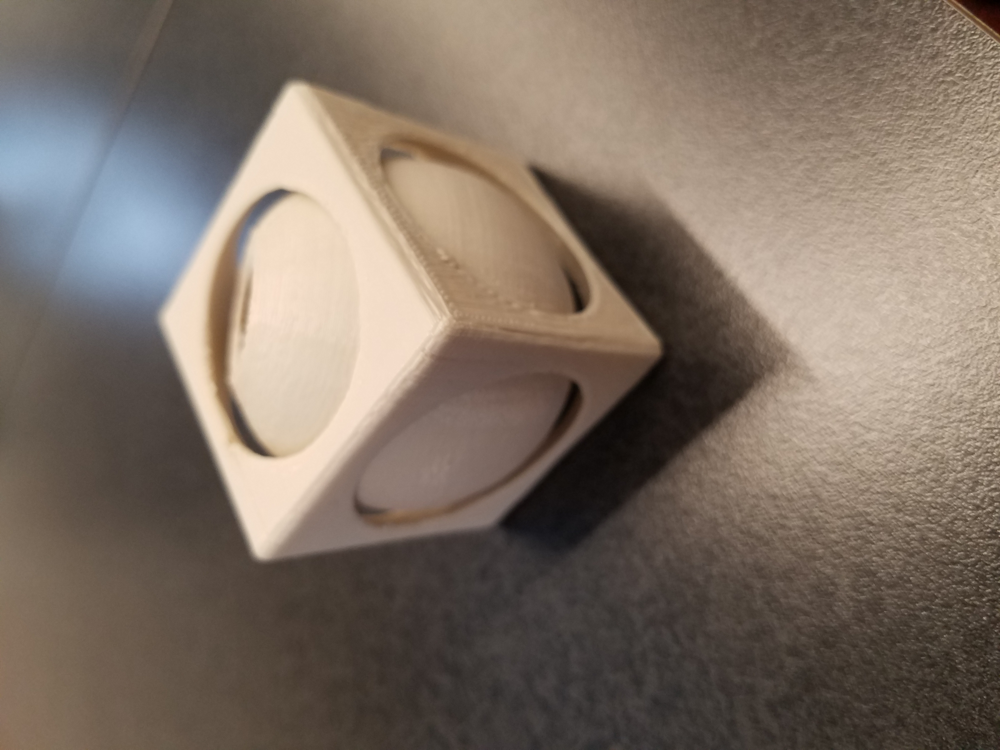
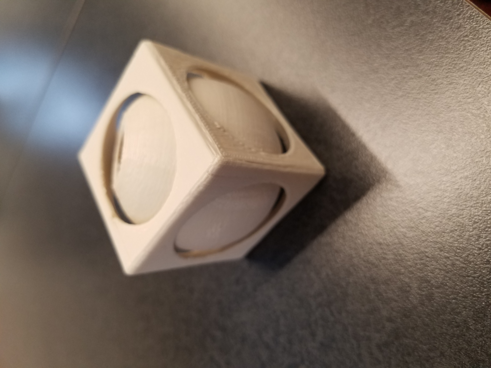

Making Vinyl Stickers
To make vinyl stickers, I first had to get to CorelDraw and import the images that I chose.
I chose a hot dog and a weiner dog shadow since vinyl stickers are in one color.
I created a line bitmap of it then got it cut out at the Roland Cutting Machine.
After that, I had to take the excess sticker off and stick transfer tape on the remaning desired sticker part.
Then I transfered the vinyl stickers over onto my notebook.
They look pretty good on the bottom.

Full Color Cut Contour Stickers


Making an Object that can't Be Made Subtractively
I thought about it a bit and made an object that can't be made subtractively.
It is a hollow sphere with a hole in it that is within a cube that has open circular faces.
It acts kind of like a fidget cube.
 

Useful Thing with Partner
...


File Download
My Head File (.stl)
Pedestal File (.stl)
Final Attached File (.stl)
Fidget Thing File (.stl)